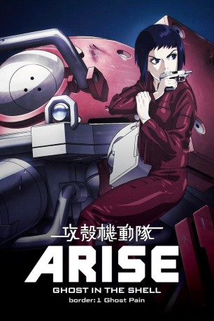

#5900 Ghost in the Shell Arise - Border 1: Ghost Pain
 
 IMDB-Wertung: 7.3 / 10
IMDB-Wertung: 7.3 / 10  Metascore: 0
Metascore: 0 
Ghost in the Shell: ARISE ist zeitlich gesehen vor den bereits erschienenen GitS-Filmen und -Serien einzuordnen und stellt die erweiterte TV-Fassung der gleichnamigen OVAs dar. Die Handlung dreht sich um politische Intrigen, Bestechung, illegalen Waffenhandel und Cyberterrorismus - im Zentrum stehen aber vor allem die Ereignisse, die zur Bildung von Sektion 9 in der letztendlichen Besetzung geführt haben und zudem wird Motoko Kusanagis Vergangenheit beleuchtet.
Jahr: 2013
Dauer: 58 Minuten
FSK:
Land: Japan Studio: UFATonspuren: DTS - ,
Untertitel: Deutsch,
Auflösung: 1080p (1920x1080) Größe: 2488 MB
Genre: Action, Sci-Fi, Animation/Trick
Regisseur: Masahiko Murata, Kazuchika Kise
Drehbuch: Peter Buchman
Soundtrack:
Darsteller:
Datei: X:\HD-Anime-Collections\Ghost in the Shell\Ghost in the Shell Arise - Border 1 Ghost Pain (2013, FSK, 1920x1080).mkv seit 03.04.2017
Festplatte: Gemischt-01+Anime
 Es gibt insgesamt 15 Filme in der Gruppe 'HD-Anime-Collections\Ghost in the Shell'
Es gibt insgesamt 15 Filme in der Gruppe 'HD-Anime-Collections\Ghost in the Shell'